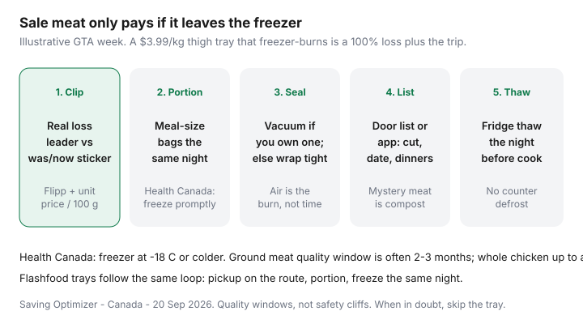

Food & Groceries · Canada
How to stock a freezer from Canadian meat sales without chaos
Canadian flyer meat is how households think they are winning — then a whole tray of thighs becomes a white brick, an unlabelled Flashfood pack becomes archaeology, and the “deal” is a 100% loss plus the drive. The leak is not the Thursday circular. It is the missing freezer system: no portions, no list, no thaw plan.
This is a Canada-specific loop tied to Flipp loss leaders and Flashfood same-day pickups, not a U.S. warehouse-club essay. Health Canada’s storage temperatures and leftover rules sit underneath the dollars. Vacuum sealers and freezer bins are optional tools, not a personality.
Disclosure: Vacuum sealers and freezer organizers are offer types. Saving Optimizer may earn a commission if we later add those links. We do not currently claim partnerships with grocers, Flashfood, or appliance brands. Painter’s tape, the bags you already own, and a paper list on the door are enough to run this system.
Key takeaways
- Buy sale meat only when the unit price is a real loss leader and you have freezer space tonight.
- Portion into meal-size bags before anything hits the ice. Family packs without a knife are compost in slow motion.
- Vacuum sealing helps if you already freeze weekly. Tight wrap plus a door list beats a gadget you will not plug in.
- Flashfood meat follows the same rule as flyer meat: pickup on the route, freeze the same night, name the dinner.
- Thaw in the fridge the night before a weeknight cook. Counter thawing is a Health Canada no.
Identify real meat loss leaders vs fake discounts
Open Flipp on flyer day (often Thursday in much of Canada). Search the protein you already cook — thighs, drums, ground turkey, pork shoulder — not a cut you will “figure out.” Compare unit price across No Frills, FreshCo, Food Basics, Superstore, Maxi, or Super C. A $7 “convenient” boneless tray at $12.80/kg is not a sale if a family pack is $3.99/kg two stores away.
| Signal | Usually real | Usually theatre |
|---|---|---|
| Unit price | Clearly lower than last month’s memory on the same cut | A small pack with a loud dollar total |
| Family pack / whole bird | You will portion tonight | You hope the household “eats more chicken” |
| Multi-buy | You can freeze the extras as labelled dinners | “Save $3 when you buy 3” with no freezer space |
| Manager’s special / Flashfood | Date and smell are fine; pickup is on the route | A dedicated winter drive for one tray |
Price matching still happens at a human till — see Flipp price-matching and Won’t Be Beat. Matching a competitor’s loss leader only helps if you will freeze what you carry out. Put the winning cut on Thursday’s meal list first: sales → meals → list.
Portioning before freezing
The system dies when a 2 kg tray goes into the freezer as one lump. You then thaw more than a weeknight needs, recook, forget, or toss. Home from the store: wash hands, use a clean board, split into the portions you actually cook (often 400–700 g for two adults, less for a solo kitchen).
- Decide tonight’s dinner before the rest is wrapped. Cook or start a marinade if that is the plan.
- Bag the rest in meal sizes. Press air out. Flatten bags so they stack.
- Write cut + date + intended meal on painter’s tape (“thighs 3 Sep / tacos”).
- Raw meat on a tray or in a bin so juices cannot baptize the peas.
- Update the door list in the same five minutes. If you will not write it, you will not eat it.
Health Canada: refrigerate or freeze raw meat promptly; fridge at 4 °C or lower, freezer at −18 °C or lower. Ground meat in the fridge is a 1–2 day product. Flashfood ground beef is not a Wednesday science project.
Vacuum sealing vs trays
Air is what freezer-burns meat. A vacuum sealer is rational if you already buy family packs or Costco trays most months and you will use the machine. It is a drawer ornament if this is your first flyer experiment.
Good enough without a sealer: heavy freezer bags, a straw or water-displacement press to drop air, a double wrap on longer holds, and not overloading a dying freezer. Rigid trays waste space and leak. Reusable silicone bags work if you actually wash them. Boutique “freezer systems” are an offer type — buy the one you will label.
Quality windows (Health Canada, freezer at −18 °C): ground meat often 2–3 months; many whole-muscle beef/pork cuts 8–12 months; chicken pieces about 6 months; a whole bird up to a year. Eat older bags first. If it smells off after thaw, bin it — a $4 loss is cheaper than a sick week.
Inventory whiteboard / app methods
Mystery meat is compost. Pick one inventory you will touch:
- Door paper or whiteboard: three columns — cut, date in, dinner name. Cross off when it leaves. Lowest friction.
- Notes app shared with whoever cooks: same three fields. Photo the bags once if the handwriting is fiction.
- Dedicated pantry apps: fine if you already live in them. Do not install a fourth grocery app you will ignore after Sunday.
Cap the freezer. A household that already has two unlabelled bricks does not get a third Flashfood win. That rule belongs in the food-waste system and on the Sunday fridge audit of the weekly grocery loop.

Flashfood meat same-day freeze protocol
Flashfood is a Loblaw surplus fridge with a map — details in the Flashfood Canada guide. Meat is the category that pays if you already shop that banner. Protocol:
- Check freezer space and tonight’s menu before you tap buy. No space, no tray.
- Pickup in the Flashfood Zone during the window, on a trip you were taking. Factor the service fee (community reports: 8% capped around $2.99 as of January 2026 — believe checkout).
- At the counter, check package integrity and smell. Use in-app help if it is off. Do not “save the deal.”
- Home: same portion-label-freeze loop as flyer meat. Ground meat is not a three-day plan.
- Put those bags on next week’s dinners so they leave. Surplus that becomes household waste is a worse story than paying shelf.
FoodHero (more Empire-adjacent) is the same discipline in a different app. Too Good To Go bakery bags are not a protein freezer strategy — chooser vs surprise bags.
Thaw planning for weeknight cooks
Sunday (or flyer night): pick two bags that will be Monday and Wednesday dinners. Move them to the fridge. Health Canada’s safest thaw is the refrigerator; cold water in a leak-proof bag is the rush option; microwave only if you cook immediately. Do not thaw on the counter. Do not refreeze fully thawed raw meat unless you cook it first.
Weeknight reality: a labelled 500 g bag of thighs plus frozen veg and rice you already own is dinner. That is the same template as budget meal prep and cheap high-protein meals. If you never remember to thaw, cook from frozen in a way that still hits a safe internal temperature, or stop buying family packs.
Track four weeks: sale or Flashfood price versus what you threw out. The last line is the only honest “freezer savings” number. A tidy sealer collection with three forgotten roasts is a hobby, not a system.
Sources & date stamps
- Health Canada, safe food storage and leftovers pages: fridge 4 °C, freezer −18 °C; ground meat fridge 1–2 days / freezer 2–3 months; chicken pieces ~6 months; whole bird up to 1 year (quality windows).
- Health Canada, safely defrosting foods: fridge, cold water, or microwave-then-cook; no counter thaw; do not refreeze fully thawed meat.
- Love Food Hate Waste Canada planning pages: shop the fridge/freezer before the flyer.
- Flashfood / Loblaw partnership context as used in our Flashfood guide (fees: community 8% / ~$2.99 cap reports from Jan 2026 — verify checkout).
Frequently asked questions
How long can I freeze grocery-sale meat in Canada?
Health Canada quality windows at -18 C are typically 2-3 months for ground meat, 8-12 months for many whole-muscle pork or beef cuts, 6 months for chicken pieces, and up to a year for a whole bird. Those are quality guides, not a safety cliff. Label the date and eat the oldest bag first.
Is a vacuum sealer required to stock a freezer from flyer meat?
No. Tight wrap, freezer bags with the air pressed out, and a door inventory beat an unused gadget. A sealer is an offer type if you already freeze every week and lose food to burn. Painter's tape and a marker are enough to start.
Should I freeze Flashfood meat the same day?
Yes, if you will not cook it within about 24 hours. Flashfood trays are surplus for a reason. Pickup on a trip you were taking, portion at home, freeze what is not dinner. A dedicated drive for one tray plus a forgotten bag is a loss.
How do I tell a real meat loss leader from a fake discount?
Compare the shelf unit price (per 100 g or per kg) to last month's memory and to a second banner on Flipp. A 'was $12.99 now $11.49' sticker on a small tray can still lose to a family pack at $4/kg. Multi-buy 'save $3 when you buy 3' is not a loss leader if you cannot freeze two of them.
What is the safest way to thaw frozen grocery meat?
Health Canada: thaw in the fridge, in cold water in a leak-proof bag, or in the microwave if you will cook immediately. Do not thaw on the counter. Do not refreeze meat that has fully thawed unless you cooked it first.